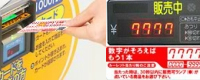
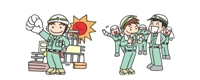
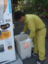
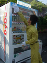
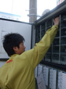
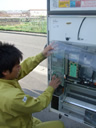
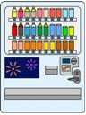
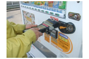

自動販売機オペレートサービス
弊社が「DyDo自動販売機」をお勧めするのにはワケがあります
自動販売機設置のメリットは何と言っても毎月の販売手数料収入！
自動販売機を設置すると、その自動販売機の売上高によって毎月販売手数料を受け取ることが出来ます。
ＤｙＤｏの商品は自動販売機でしか買えない！
ＤｙＤｏの商品は一部商品を除いてコンビニや量販店には流通していません。だから、自動販売機設置のメリットも高いのです。
ＤｙＤｏの商品はこだわりが違います！
ブレンドコーヒーに代表される主力コーヒーは、香料を一切使用せずに製造。だから飽きのこない味で、ロングランのユーザーが付いて冬場でも安定した売り上げが見込めます。
豊富な自動販売機ラインナップ！
数字がそろえば、もう一本おまけ！ポイントを集めればポイント数に応じて景品がもらえる！など、自動販売機設置場所に合わせた、楽しい提案が出来ます。
売上の一部を募金できる「緑の募金自販機」や「ゴールドリボン自販機」、災害時に電気が止まっても中身商品を供給できる「災害時支援自動販売機」など、特殊機能の付いた自動販売機もあります。

福利厚生にも最適！
工事現場や工場など、飲料が必要な場面で福利厚生をはかる場合は定価よりも安い値段設定をして販売する事も可能です。

自動販売機設置後の管理は、弊社にお任せください！
-

空き缶・ゴミの回収
自動販売機設置時に、空き缶ボックスを一緒に設置し、定期訪問時に必ず空き缶の回収を行います。自販機コーナーなど、大量に空き缶が発生する場所では、弊社と提携した回収業者に委託することもできます。
-

自動販売機の清掃
より綺麗な環境で気持ちよく商品をご購入いただくために、定期的なワックスがけや、取り出し口の清掃を行っています。また、硬貨識別機や紙幣識別機の清掃を行うことによって、自動販売機の故障を未然に防ぎます。
-

適切な商品補充
商品のサイクルは、場所や季節などによって変動します。弊社では、データベースで商品管理を行っているため、商品の消費サイクルを、常に把握し、適切なタイミングで商品の補充をおこなっています。売り切れサインがつかないように心がけ、ご購入いただけるお客様に、いつでもお好みの商品を、ご購入いただけるように心がけています。
-

集金作業
定期的に巡回し、補充作業とともに集金作業を行い、毎月の売上を集計し、お客様に明細書をお渡ししています。おつりが切れることのないように、常に心がけています。
-

その他付帯業務
コンセント口の安全確認や、自動販売機の転倒の危険がないかなど、年２回の自動販売機安全チェックをおこなっています。季節の変わり目など、必要に合わせて蛍光灯のチェック・交換を行っています。
故障時も電話１本で、安心のお客様対応
故障時のサポート——自動販売機の故障・盗難など不具合が発生した場合も、連絡先（弊社）の電話番号を記載した「管理者ステッカー」を貼り付けています。
万が一、故障・盗難が発生した場合でも、お客様に手間をおかけせずに、弊社の方で対応させていただいております。
売上金額と販売手数料もシステムで自動計算
弊社では、売上を全てデータで管理しています。自動販売機からハンディターミナルを使用し、売上データを収集し、集金額と突合せを致します。実際に販売された本数と、金額をデータで管理していますので、ミスがありません。
ハンディターミナルから取得したデータは、ホストコンピュータに保存され、月末締めで売上金額と販売手数料が自動計算されます。また、売れ筋データも把握していますので、設置場所にとって最適な商品構成を実現できます。
